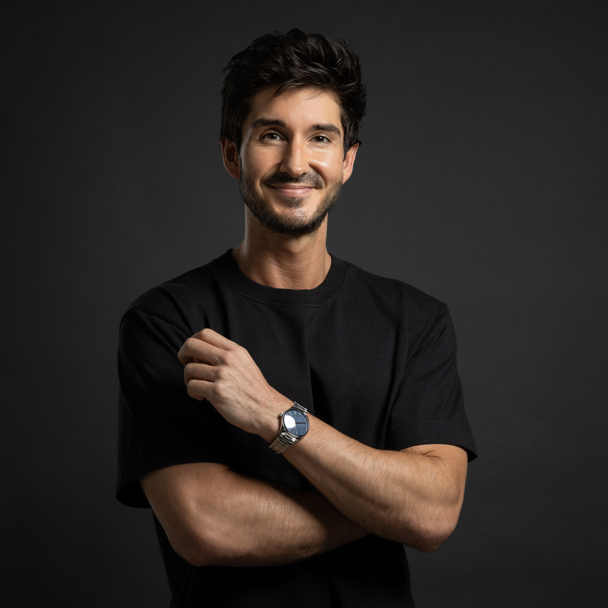

Product · Fintech · Digital Assets
Product Management / Dubai, UAE
Finance professional transitioning into product management at the intersection of fintech and digital assets. I bring institutional-grade financial expertise into a space that too often lacks it.
My background spans wealth management, venture capital, and co-founding a regulated commodities trading platform in Dubai — giving me an unusual vantage point: I understand both what financial products need to do and how to build the teams and systems that deliver them.
Credentials
CAIA
Chartered Alternative Investment Analyst
CBP
Certified Bitcoin Professional
International Compliance Association (ICA)
Associate Member — AML/CFT
Regulated Markets
DMCC · Dubai · Commodities
Experience
Co-Founder & Managing Director
IEG AFRICA DMCC · DUBAI
Senior Financial Analyst
ARITHMOS CAPITAL · VENTURE CAPITAL
Investment Paraplanner — Wealth Management
NEDBANK PRIVATE WEALTH · SOUTH AFRICA
Focus Areas
Projects